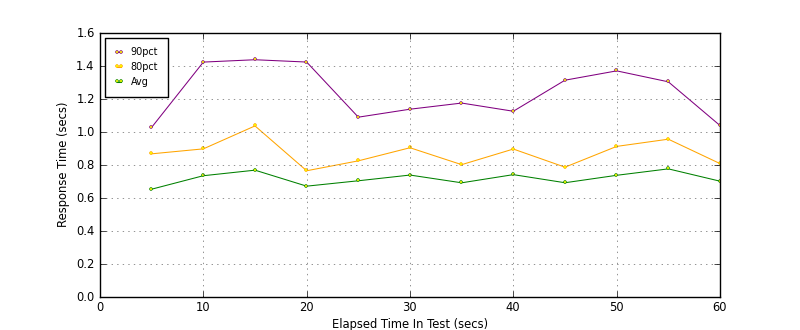
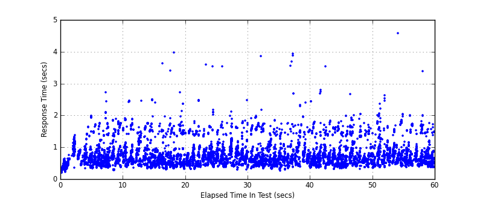
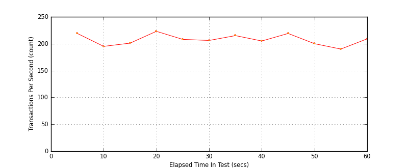

Performance Results Report
Summary
transactions: 12614
errors: 0
run time: 60 secs
rampup: 0 secs
test start: 2017-05-25 10:45:16
test finish: 2017-05-25 10:46:16
time-series interval: 5 secs
workload configuration:
| group name | threads | script name |
|---|
| user_group-10 | 10 | redis_stress.py |
| user_group-11 | 10 | redis_stress.py |
| user_group-12 | 10 | redis_stress.py |
| user_group-13 | 10 | redis_stress.py |
| user_group-14 | 10 | redis_stress.py |
| user_group-15 | 10 | redis_stress.py |
| user_group-2 | 10 | redis_stress.py |
| user_group-3 | 10 | redis_stress.py |
| user_group-1 | 10 | redis_stress.py |
| user_group-6 | 10 | redis_stress.py |
| user_group-7 | 10 | redis_stress.py |
| user_group-4 | 10 | redis_stress.py |
| user_group-5 | 10 | redis_stress.py |
| user_group-8 | 10 | redis_stress.py |
| user_group-9 | 10 | redis_stress.py |
All Transactions
Transaction Response Summary (secs)
| count | min | avg | 80pct | 90pct | 95pct | max | stdev |
|---|
| 12614 | 0.191 | 0.716 | 0.873 | 1.212 | 1.523 | 4.582 | 0.363 |
Interval Details (secs)
| interval | count | rate | min | avg | 80pct | 90pct | 95pct | max | stdev |
|---|
| 1 | 1096 | 219.20 | 0.191 | 0.653 | 0.868 | 1.028 | 1.198 | 1.978 | 0.314 |
| 2 | 975 | 195.00 | 0.277 | 0.735 | 0.898 | 1.424 | 1.618 | 2.712 | 0.383 |
| 3 | 1005 | 201.00 | 0.329 | 0.769 | 1.037 | 1.438 | 1.630 | 2.498 | 0.416 |
| 4 | 1116 | 223.20 | 0.300 | 0.672 | 0.765 | 1.424 | 1.516 | 3.973 | 0.392 |
| 5 | 1040 | 208.00 | 0.304 | 0.704 | 0.825 | 1.090 | 1.453 | 3.591 | 0.358 |
| 6 | 1033 | 206.60 | 0.293 | 0.739 | 0.905 | 1.138 | 1.434 | 3.541 | 0.316 |
| 7 | 1076 | 215.20 | 0.320 | 0.692 | 0.802 | 1.175 | 1.555 | 3.851 | 0.351 |
| 8 | 1026 | 205.20 | 0.252 | 0.742 | 0.897 | 1.126 | 1.481 | 3.921 | 0.380 |
| 9 | 1096 | 219.20 | 0.303 | 0.693 | 0.787 | 1.314 | 1.535 | 3.531 | 0.351 |
| 10 | 1002 | 200.40 | 0.315 | 0.738 | 0.913 | 1.371 | 1.488 | 2.662 | 0.343 |
| 11 | 954 | 190.80 | 0.361 | 0.777 | 0.956 | 1.304 | 1.666 | 4.582 | 0.393 |
| 12 | 1045 | 209.00 | 0.364 | 0.702 | 0.809 | 1.039 | 1.530 | 3.386 | 0.323 |
Graphs
Response Time: 5 sec time-series

Response Time: raw data (all points)

Throughput: 5 sec time-series
